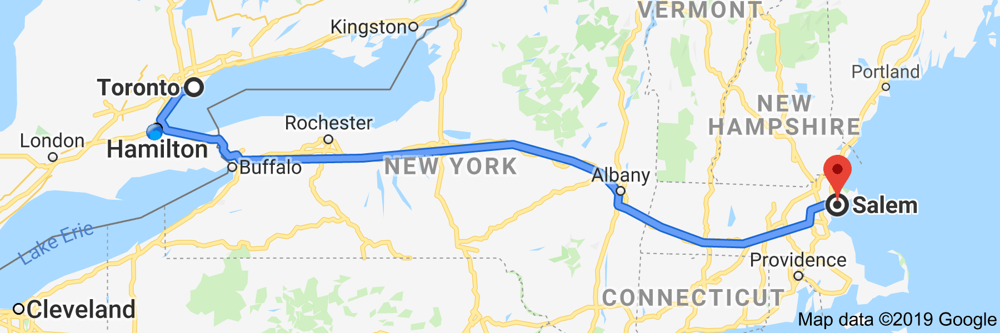
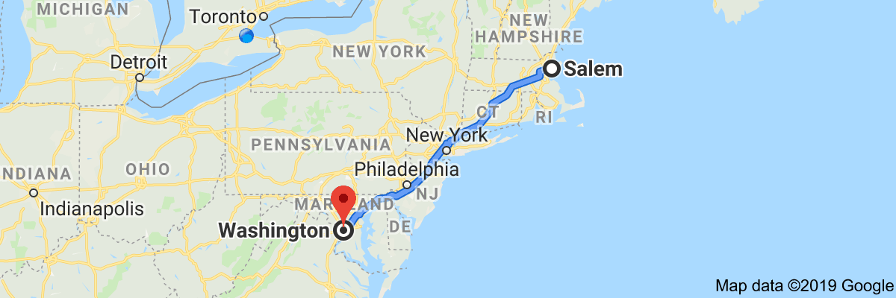
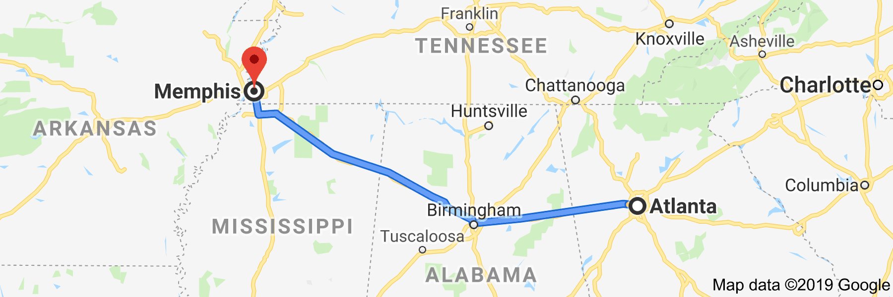
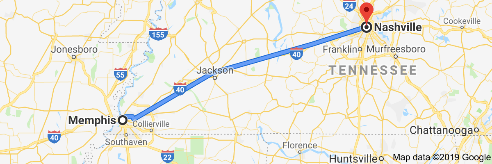
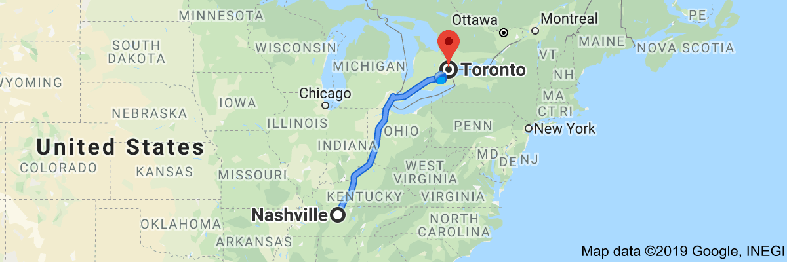

Reddit rankingman youtube channel
osm2pgrouting, overpass api - overpass ql,
gis stackexchange overpass-api tag,
text to speech - festival, espeak, pico2wave/svox,
desbma/GoogleSpeech, pndurette/gTTS,
mycroftai/mimic, firefox tts
Loading json files into postgres rows
sql> \set content `cat /tmp/test.json`
sql> create temp table t ( j jsonb );
sql> insert into t values (:'content');
sql> select * from t;
Whatever the mind of man can concieve and believe,
it can achieve
TV Studios
Fire Side Chat
Late Night Comedy Variety Hour
News Caster Studio
Political Debate Stage
Soccer Stadium
Don't wait. The time will never be just right.
If you cannot do great things, do small things in
a great way.
Toronto to Salem, MA

9.5 hours
570 miles
I-90
Major Sights
Buffalo, New York
Rochester, New York
Albany, New York
Songs
Movies
TV Shows
Boston to Washington, DC

8 hours
460 miles
I-95
Major Sights
Boston, Massachussetts
New York, New York
Philedelphia, Pennsylvania
Baltimore, Maryland
Songs
Movies
TV Shows
Washington, DC to Atlanta
10.5 hours
640 miles
I-85
Major Sights
Richmod, Virginia
Charlotte, North Carolina
Songs
Movies
TV Shows
Atlanta to Memphis

6 hours
400 miles
I-20 and I-22
Major Sights
Birmingham, Alabama
Songs
Movies
TV Shows
Memphis to Nashville

3 hours
210 miles
I-40
Major Sights
Songs
Movies
TV Shows
Nashville to Toronto

12 hours
770 miles
I-65 and I-75
Major Sights
Songs
Movies
TV Shows
6 hours or less ->
start 11 am ->
drive times square area -> 1.5 miles ->
stop and walk at Dakota Building
(john lennon's home) at
Central Park West and 72nd Street ->
walk to Strawberry Fields / Imagine Mosaic ->
walk to view luxury condominiums
(home of many celebrities) -> 1 mile ->
drive by Central Park Zoo -> 0.3 mile ->
drive by The Plaza hotel -> 0.4 mile ->
drive by Carnegie Hall -> 1.1 mile ->
drive around Rockefeller Center block ->
drive by St Patrick's Cathedral /
drive by Rockefeller Center ice skating rink /
drive by Rockefeller Center christmas tree /
drive by Rockefeller NBC Today Show set -> 1.3 mile ->
drive by Madison Square Park -> 0.8 mile ->
drive by Flatiron Building -> 1.8 mile ->
drive by Met-Life Building -> 0.7 mile ->
drive by Empire State Building -> 1.7 mile ->
drive by Greenwich Village -> 0.9 mile ->
drive by Soho -> 0.9 mile ->
drive by Chinatown -> 1.4 mile ->
drive by Financial District ->
drive by New York Stock Exchange (on Wall Street) -> 0.8 mile ->
drive by Federal Hall -> 0.1 mile ->
drive by Trinity Church /
drive by Charging Bull sculpture (on Broadway) ->
stop / walk at 9/11 Memorial (at World Trade Center site) /
walk grounds of Memorial /
walk waterfalls of "Reflecting Absence"
(footprints of the twin towers) /
walk by Survivor Tree -> 0.8 mile ->
drive by Pier 15 (maybe get on a boat cruise) -> 3.4 mile ->
drive view manhattan /
brooklyn skyline /
drive view Brooklyn Bridge /
drive view Manhattan Bridge /
drive view Williamsburg Bridge -> 11 miles ->
drive view Ellis Island /
drive view State of Liberty /
Maybe take ferry ride to Ellis Island / Statue of Liberty /
END of trip -> head home to Philedelphia
START Parking at Hains / East Potomac Park (lots A, B, C) ->
walk to Thomas Jefferson Memorial (toilets) ->
walk to George Mason Memorial ->
walk to FDR Memorial (toilets) ->
walk to Martin Luther King, Jr Memorial (toilets) ->
walk to DC War Memorial (toilets) ->
walk to Korean War Veterans Memorial ->
walk to Lincoln Memorial (toilets) ->
walk to Einstein Memorial ->
walk to Vietnam Veterans Memorial (toilets) ->
walk to 56 Signers of Declaration of Independence Memorial ->
walk to Constitution Gardens ->
walk to World War II Memorial ->
walk to DC War Memorial (toilets) ->
walk to Washington Monument (toilets) ->
walk around Ellipse (toilets) ->
view White House from Ellipse ->
walk to White House Visitor Center ->
walk to National Aquarium ->
walk to African American History Museum ->
TOUR African American History Museum (IF HAVE TICKET) ->
walk to American History Museum ->
TOUR American History Museum ->
walk to Natural History Museum ->
TOUR Natural History Museum ->
walk to National Gallery Sculture Garden ->
walk to National Gallery West Building ->
TOUR National Gallery West Building ->
walk to National Gallery East Building ->
walk to Union Square ->
walk to Capitol Reflecting Pool ->
walk to Ulysses S. Grant Memorial ->
walk to U.S. Capitol Visitor Center ->
TOUR Capitol Visitor Center ->
walk to west steps of U.S. Capitol ->
walk to U.S. Botanic Garden ->
walk to American Indian Museum ->
walk to Air and Space Museum ->
TOUR Air and Space Museum ->
walk to Hirshhorn Museum ->
walk to Arts and Industries ->
walk to Smithsonian Castle ->
TOUR Smithsonsian Castle ->
walk to USDA Forest Service ->
walk to U.S. Holocaust Memorial Museum ->
walk to Bureau of Engineering and Printing ->
END of trip - walk back to Parking
::: Air And Space Museum (priotiy 1) :::
kitty hawk flyer ->
apollo 11 command module ->
charles lindbergh Spirit of St Louis ->
moon rock you can touch
::: American History Museum (priority 2) :::
collection of gowns from First Ladies ->
Julia Child's kitchen ->
one of the Muppets ->
the actual Star Spangled Banner ->
::: Natural History Museum (priority 3) :::
dinosaur at main fossil exhibity ->
ancient mummies ->
white rhino shot by Teddy Roosevelt ->
Hope Diamond
::: National Museum of African American History and Culture
(priority 4) :::
slavery exhibit ->
underground railroad exhibit->
Jim Crow Era exhibity ->
black american accomplishment exhibit ->
segragation exhibit ->
pop culture exhibity ->
A goal is a dream with a deadline
The starting point of all achievement is desire.
Strength and growth come only through continuous
effort and struggle
Every adversity, every failure, and every
heartache, comes with it the Seed of an equivalent
or greater Benefit.
Patience, persistence, and perspiration make an
unbeatable combination for success.
Desire is the starting point of all achievement,
not a hope, not a wish, but a keen pulsating desire
which transcends everything.
Cherish your visions and your dreams as they are
the children of your soul, the blueprints of your
ultimate achievements.